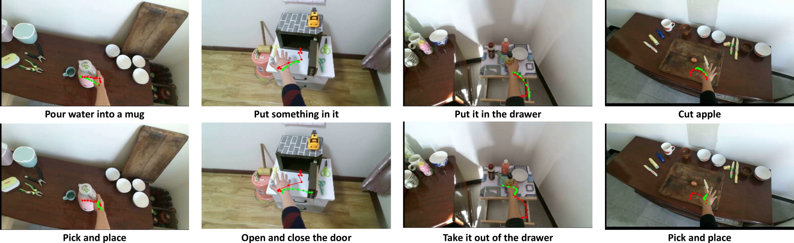
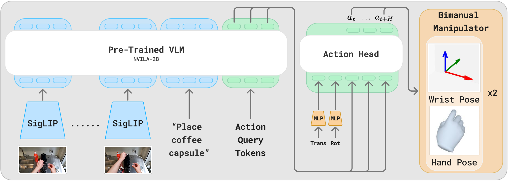
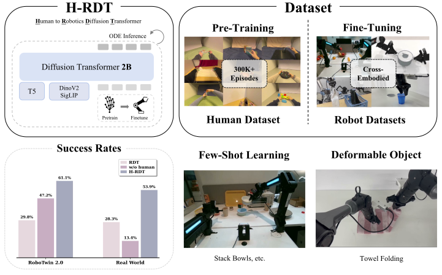
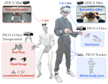
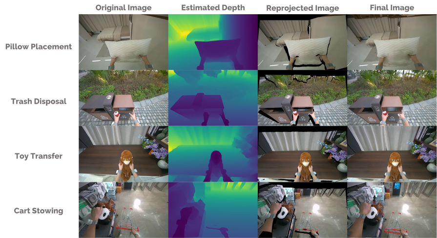
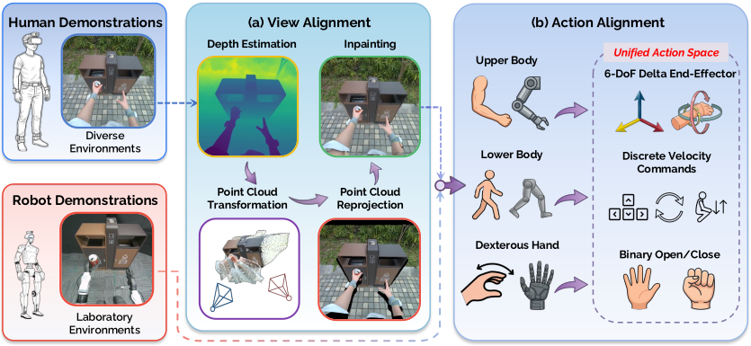
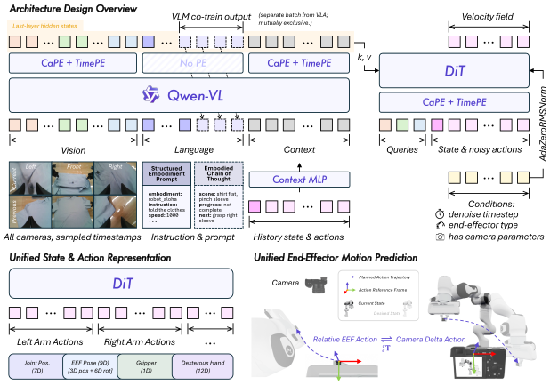
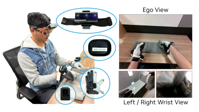
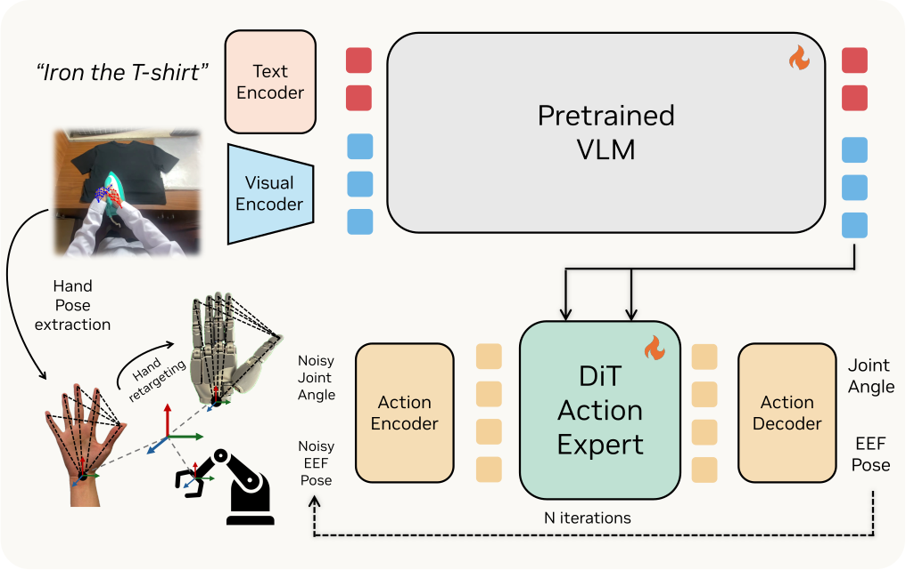

用 Ego 数据训练 VLA：数据格式与训练方式
人体第一人称视频本身只有像素。要训练 VLA，必须先变成图像、语言和动作标签。下面五个项目都是「人体 ego RGB + 语言 → 预测动作」。差别只在动作怎么定义，以及人到机器人怎么接。
1. 人手如何变成夹爪轨迹
Ego 视频里没有电机指令。进入 VLA 之前，要把手的运动写成机械臂能监督的位姿序列：腕部当作末端执行器，手指压成夹爪开合或灵巧手关节。
1.1 共同步骤
- 得到手：从第一人称视频估计 3D 手，或直接用 VR / ARKit 骨骼。常见表示是腕部位姿 \(T_{\mathrm{wrist}}\in\mathrm{SE}(3)\)，加上 MANO 参数或指尖 3D。
- 选定坐标系：把未来腕位变到某一固定参考系。EgoVLA 用当前相机系；H-RDT 用 EgoDex 的 ARKit origin（地面静止系）；EgoHumanoid 对齐到机器人头相机后再写相对 \(\Delta\mathrm{EEF}\)；Qwen-RobotManip 末端用相机系 delta pose；EgoScale 先把相机系腕变到世界系，再写成相对腕 \(\Delta W\)。
- 腕 → 夹爪 / 臂末端：腕位置当平移，旋转常写成 rot6D。这就是夹爪或 EEF 的轨迹 \(p_t, R_t\)。相对动作则取 \(\Delta p_t = p_{t}-p_{t-1}\)。
- 手指 → 开合或关节：平行夹爪只用一个开合量。灵巧手把指尖或 MANO 再映射到机器人手关节。可以先在人手动作空间里学，部署时再 retarget。
时间上会抽成固定长度的 action chunk，和图像、语言对齐后才送进网络。
1.2 三个项目怎么接
- EgoVLA：相机系腕 3D + rot6D + MANO。部署时 MANO 走 IK 得到臂 EEF，指尖再映射到机器人手关节。
- H-RDT：双手各 24 维（腕 3 + rot6D + 五指尖 \(\times 3\)），预训练就在这 48 维上。微调时丢掉人手头，换成机器人 action 维。
- EgoHumanoid：上肢写成双臂 \(\Delta\mathrm{EEF}\)，手只保留开合，不再保留逐指自由度。
- Qwen-RobotManip：人手 21 关键点写成夹爪 \((p,R,w)\)，再 H2R 渲染成 15 种双臂机器人；训练时进 80 维 canonical。
- EgoScale：相对腕 \(\Delta W\) 人机共用；手指优化 retarget 到 22-DoF 灵巧手关节，低自由度本体再换手部 adapter。
EgoVLA
TACO / HOT3D / HOI4D / HoloAssist
腕 3D + rot6D + MANO
加权 L1/L2，关掉 LM next-token
同一 decoder，换 humanoid demo
H-RDT
AVP 1080p + 双手 3D
腕 + rot6D + 五指尖 × 2
预计算语言，flow matching
冻 backbone，重初始化 action 头
EgoHumanoid
PICO VR + ZED Mini
\(\Delta\mathrm{EEF}\) + 导航 + 手开合
PaliGemma + flow matching
与 G1 遥操作加权 mix
Qwen-RobotManip
EgoDex / VITRA / EgoVerse 与 OXE 等
\((p,R,w)\) 渲染 15 种双臂
80 维 canonical，相机系 \(\Delta\)pose
flow matching 与 VLM 共训
EgoScale
野外头戴 + EgoDex
关键点 retarget 到灵巧手
结构类似 GR00T N1
少量人机 play 再 post-train
图 1. 五个项目从 ego 源到机器人，各自四步。
2. EgoVLA
图像和语言走 VLM，动作由 trajectory decoder 回归。三条里最接近标准 VLM-VLA。

图 2. EgoVLA 总览：人体第一人称视频经统一动作空间训练、部署。
2.1 数据格式
公开头戴数据集写成训练样本。未来腕位变到当前相机系。
| 字段 | shape / 内容 |
|---|---|
| RGB | 当前帧 + 历史帧，ego 相机 |
| 腕位置 | 当前相机系，每手 3 |
| 腕旋转 | rot6D，每手 6，合计 12 |
| 手 | MANO，左右合计 30 |
| 语言 | 文本指令 |
| 动作输出 | \(48 = 6_{\mathrm{EE}} + 30_{\mathrm{hand}} + 12_{\mathrm{rot6d}}\) |
| 时间 | 30 Hz，未来 30 步（约 1 s chunk） |

图 3. HOI4D 第一人称人手轨迹：红为 GT，绿为预测；改语言指令后轨迹变化。
2.2 训练方式
两阶段，动作头不变：先在人体 ego 上预训练，再换成仿真 / 机器人演示微调。
- 输入：ego 视觉历史 + 语言 + proprio → VLM。
- 输出：trajectory decoder 回归未来 30 步动作。
- 目标：加权回归，关掉 LM next-token。\(\mathcal{L}=20\,\mathcal{L}_{\mathrm{ee}}+5\,\mathcal{L}_{\mathrm{hand}}+5\,\mathcal{L}_{\mathrm{rot}}\)。

图 4. 训练架构：ego 视觉历史 + 语言 + proprio → VLM → Action Head。

图 5. 人体 / 机器人动作对齐与 MANO、IK retarget。
3. H-RDT
在 EgoDex 上预训练 DiT / flow，再换 action 头微调到双臂机器人。语言预先编码，训练时不再跑语言模型。

图 6. H-RDT 总览：ego 人手预训练后再跨本体微调。
3.1 数据格式
源数据是 Apple EgoDex（头戴 RGB + 双手 3D）。动作停在 ARKit origin（地面静止系），不是当前相机系。
| 字段 | shape / 内容 |
|---|---|
| 图像 | \(1080\times 1920\)，单相机、单帧 |
| state | \((1,\,48)\) |
| action | \((16,\,48)\)，归一化到 \([-1,1]\) |
| 48 维 | 每手 24：腕 3 + rot6D 6 + 五指尖 \(5\times 3\)；双手拼接 |
| 语言 | 预计算 T5 embedding |
| 微调 | 换成机器人 action 维 |
3.2 训练方式
两阶段，动作头会换：人体 48 维上做 flow matching，微调时冻视觉 / 语言，按机器人维重初始化 action 头。
- 输入：单帧图像 + 当前 48D state + 语言 embedding。
- 输出：未来 16 步、48 维人手动作（微调后为机器人维）。
- 目标：flow matching。\(x_t = t\,a+(1-t)\,\varepsilon\)，\(\mathrm{MSE}(\hat{v},\,a-\varepsilon)\)。

图 7. 两阶段训练：人体 ego 预训练，再冻视觉 / 语言、换机器人 action 头。
4. EgoHumanoid
自采集头戴 ego 人体演示，加上少量机器人遥操作，共训 \(\pi_{0.5}\)。人侧源数据是头戴相机，不是机器人相机。

图 8. 野外 ego 人数据与实验室机器人数据对齐后共训。
4.1 数据格式
人体采集后做视角对齐（往机器人头相机靠）和动作对齐，再写成与机器人同一套字段。
| 字段 | shape / 内容 |
|---|---|
| 图像 | 头左相机 RGB |
| 双臂 | \(\Delta\mathrm{EEF}\)，\((H,\,12)\) |
| 身高 | \((H,\,1)\) |
| 导航 | \((H,\,3)=[v_x,\,v_y,\,\dot{\psi}]\) |
| 手 | 开合 |
| 语言 | 任务描述 |

图 9. 采集硬件：人 / 机器人均头戴相机，人侧另有 VR。

图 10. 视角对齐：原 ego 图 → 深度 → 重投影 → inpaint。
4.2 训练方式
一阶段共训：人体对齐后的样本和机器人遥操作按权重混合，送进同一个 \(\pi_{0.5}\)。
- 输入：头相机图像 + 语言 prompt。
- 输出：未来 \(H\) 步的 \(\Delta\mathrm{EEF}\) + 导航 + 手开合。
- 目标：flow matching。\(x_t = t\,\varepsilon + (1-t)\,a\)，\(u_t = \varepsilon - a\)，预测 \(v_t\) 对 \(u_t\) 的 MSE。

图 11. 人机对齐：视角变换与统一动作空间。
5. Qwen-RobotManip
对齐再缩放：异构真机与人体 ego 先写成同一套 80 维动作，再用 H2R 把人手视频合成 15 种双臂轨迹。Qwen-VL 出语义，DiT 用 flow matching 出连续动作。

图 12. 模型总览：多视角视觉、结构化 embodiment prompt 与历史 context 进入 Qwen-VL，再经交替 cross-attention 注入 DiT；状态/动作共用 80 维 canonical，末端为相机系 delta pose。
5.1 数据
人体源是带手标注的头戴视频；真机源是开源操作集。二者都经同一套清洗后，写成 80 维 canonical。人体还会再走 H2R，渲染成机器人外观。
| 字段 | shape / 内容 |
|---|---|
| RGB | 一至多路相机；ViT 动态分辨率，固定 \(H\times W\) 论文未给出 |
| 人体 ego | EgoDex 732 h（AVP，双手各 25 关节 \(\mathrm{SE}(3)\)，30 Hz）+ VITRA 247 h + EgoVerse 954 h，合计约 1,933 h |
| 手标注 | 统一成 MANO + 每手 21 关键点；缺 MANO 的源用优化拟合 |
| H2R 合成 | 同一条人手轨迹渲染 15 种双臂形态，约 24,808 h |
| 真机 | OXE / DROID / AgiBotWorld 等开源，约 11,420 h；预训练合计约 38,100 h |
| 80 维 | 两臂各 29：关节 7 + EEF 位置 3 + rot6D 6 + 夹爪 1 + 灵巧手 12；另预留 22（底盘等） |
| 坐标系 | state 用绝对量；EEF 动作为相机系 delta pose（需内外参）；无标定时退回基座相对 |
| 语言 | 结构化 prompt：embodiment / instruction / speed / fps / camera view |
| 动作 chunk | \(\mathbf{a}\in\mathbb{R}^{T\times 80}\)；具体 \(T\) 论文未给出 |
5.2 如何转到夹爪 / EEF
人手没有电机指令。Qwen 把每帧写成夹爪 \(\mathbf{a}_t=(p_t,R_t,w_t)\)：虚拟指尖 \(\mathbf{k}_{\mathrm{vf}}=0.7\,\mathbf{k}_{\mathrm{index}}+0.3\,\mathbf{k}_{\mathrm{middle}}\)，位置取拇指与虚拟指中点，开合取其距离；夹爪坐标系由拇指—虚拟指连线与腕到指尖方向构成右手系。位置/开合做 Savitzky–Golay，姿态做 SLERP。再对 15 种本体搜基座位姿、MuJoCo IK，把人手从画面抹掉后把机器人合成回去。
Qwen 原文那张 H2R / 合成机器人数据的图展示不直观、不清晰。下面用 Ego2Robot 的 Overview Video 和 The Ego2Robot Pipeline 图，更清楚地展示人手演示如何转到夹爪 / EEF。视频与 pipeline 图来自 Ego2Robot（该页写明其合成数据进入 Qwen-RobotManip 预训练），不是 Qwen 论文原图。
图 13. Ego2Robot Overview Video：人手 ego 如何被 retarget、抹手、再合成机器人轨迹。来源：www-ye.github.io/ego2robot_blog，不是 Qwen 论文原图。

图 14. The Ego2Robot Pipeline：动作对齐（关键点 → TCP / 开合 / 姿态）→ 视觉对齐（分割、inpaint、基座搜索、IK、深度合成）→ 质量筛选。来源同上，不是 Qwen 论文原图。

图 15. Qwen 论文自带的 H2R 图（展示不直观、不清晰）：上为 retarget / 分割 / inpaint / IK / 合成，下为 1,933 h ego 扩到约 24,808 h、15 种形态。
5.3 模型结构与训练如何产出动作
视觉语言走 Qwen3.5-4B（最后一层隐状态 \(D_{\mathrm{vlm}}=2560\)），动作走 10 层 DiT（\(D_{\mathrm{act}}=768\)，12 头）。DiT 对 state/action token 做自注意力，再交替 cross-attend 视觉 token 与语言 token。本体感觉经两层 MLP 接到噪声动作序列前面。
- 输入：多视角图像 + 结构化语言 + 80 维 state；可选历史 context chunk（观测、state、已执行动作）。
- 输出：未来 \(T\) 步、80 维动作。关节为绝对值，EEF 为相对 delta；未占用的维用二值 mask 不计入损失。人体数据在手离开画面后整臂 mask 掉。
- 目标：flow matching。\(x_t=(1-t)\,\varepsilon+t\,\mathbf{a}\)，\(t\sim\mathrm{Beta}(1,1.5)\)，预测速度 \(\mathbf{a}-\varepsilon\) 的 MSE。推理 4 步 Euler。另以 \(\lambda=0.1\) 做 VLM next-token，VLA 与 VL 约 9:1 双流共训。
- 人机怎么接：不换动作头。H2R 把人变成机器人轨迹后，与真机共用 80 维槽位；后训练只优化 flow matching，可做目标域 SFT。
6. EgoScale
先在两万小时人体 ego 上预训练相对腕和灵巧手，再用少量对齐的人机 play 做 mid-training，最后用很少的机器人演示 post-train。结构按 GR00T N1 一类的 flow VLA。

(a) Egocentric Human Data Collection

(b) EgoScale Model Architecture
图 16. 原文 Figure 2。左：mid-training 采集与机器人同相机（头 + 双腕），Vive 跟腕、Manus 跟手。右：flow VLA，腕动作人机共享，本体感觉和手关节走 embodiment adapter。
6.1 数据
Stage I 是大规模、带噪声的野外 ego；Stage II 是实验室里与机器人视角对齐的少量人机数据。人手监督来自 SLAM 相机位姿和 21 关键点，不是电机指令。
| 字段 | shape / 内容 |
|---|---|
| RGB | 头戴 ego，30 FPS；固定分辨率论文未给出。Mid-training 另有左右腕相机，与机器人同内参、同视角 |
| 相机位姿 | \(\mathbf{T}_{w\leftarrow c}^{t}\in\mathrm{SE}(3)\)，off-the-shelf SLAM |
| 手 | 相机系 21 关键点，每个 \(\mathbf{H}_{c,i}^{t}\in\mathrm{SE}(3)\)；\(i=1\) 为腕 |
| 腕 | 世界系 \(\mathbf{W}_w^{t}=\mathbf{T}_{w\leftarrow c}^{t}\mathbf{H}_{c,1}^{t}\)；chunk 内相对首帧 \(\Delta\mathbf{W}^{t}=(\mathbf{W}_w^{0})^{-1}\mathbf{W}_w^{t}\) |
| 手指 | 优化 retarget 到 Sharpa 22-DoF 关节 \(\mathbf{a}_{\mathrm{hand}}^{t}\in\mathbb{R}^{22}\) |
| Stage I | 约 20,854 h 野外 ego（9,869 场景 / 6,015 任务 / 43,237 物体）+ EgoDex 829 h |
| Stage II | 344 桌面任务：约 50 h 人（Vive 腕 + Manus 25 关节）+ 4 h 机器人遥操作 |
| proprio | 机器人有 \(q_t\)；人体用可学习占位 token |
| 动作 chunk | 预测未来一段 \(A_t=(a_t,\dots,a_{t+H})\)；具体 \(H\) 论文未给出 |
6.2 如何转到夹爪 / EEF
EgoScale 的部署本体是带 22-DoF 灵巧手的双臂，不是平行夹爪。臂与夹爪式 EEF 仍共用「相对腕 / 相对末端」这一层。
- 腕 → 臂末端：相机系腕变到世界系后，在一个 action chunk 里相对该 chunk 第一帧写 \(\Delta\mathbf{W}^{t}\)。机器人双臂同样输出相对 EEF 的位置/姿态增量，因此人体腕轨迹可以直接监督机器人末端。
- 手指 → 手关节：21 关键点经带关节限位的优化，映射到 Sharpa 22 维关节角，预训练就在这组关节上监督。换到 7-DoF 三指（Unitree G1）时，腕表示不变，只换手部 decoder。
- Stage II：人戴与机器人相同的头/腕相机；腕用 Vive，手用 Manus。视觉和动作都与真机对齐，用来把 Stage I 学到的人体运动落到可执行控制。
6.3 模型结构与训练如何产出动作
结构按 flow-based VLA，接近 GR00T N1：VLM 把图像和语言编成 \(\phi_t\)，DiT action expert 再出动作。具体用哪一款 VLM、图像 token 数，论文未给出。
- 输入：图像 \(I_t\) + 语言 \(l_t\)；机器人再加 proprio \(q_t\)，人体用占位 token。腕增量在人机之间共享；不同本体的 proprio / 手关节走轻量 MLP adapter。
- 输出：未来 \(H\) 步的相对腕 \(\Delta\mathbf{W}\) 加上手关节（主平台 22-DoF）。
- 目标：flow matching（论文未写出与 \(\pi_{0.5}\) / GR00T 不同的公式细节）。
- 人机怎么接：三阶段且不换整头——I 人体预训练（全模型解冻）；II 对齐人机 play，冻 VLM backbone，更新视觉编码器与 DiT；III 任务向机器人演示 post-train。腕表示始终共享。
7. 对照
| EgoVLA | H-RDT | EgoHumanoid | Qwen-RobotManip | EgoScale | |
|---|---|---|---|---|---|
| ego 相机 | 公开头戴数据集 | AVP 头戴 | 头戴相机 | EgoDex / VITRA / EgoVerse | 野外头戴 + EgoDex |
| 语言 | VLM 文本 | 预计算 T5 | prompt | 结构化 prompt | 语言指令 |
| action 坐标系 | 当前相机系 | ARKit origin | 对齐后的 \(\Delta\mathrm{EEF}\) | 相机系 delta pose | 世界系相对腕 \(\Delta W\) |
| action shape | \((30,\,48)\) | \((16,\,48)\) | \((H,\,12+1+3+\mathrm{hand})\) | \((T,\,80)\)，\(T\) 未给出 | \((H,\,\Delta W+22)\)，\(H\) 未给出 |
| action 内容 | 腕 + rot6D + MANO | 腕 + rot6D + 指尖 | \(\Delta\mathrm{EEF}\) + 底盘 + 开合 | 关节 / EEF / 夹爪 / 手槽位 | 相对腕 + 22-DoF 关节 |
| 训练方式 | 加权回归 | flow matching | flow matching | flow matching + VLM 共训 | flow matching |
| 人机衔接 | 同头仿真微调 | 换 action 头 | 共训加权 mix | H2R 合成后同槽位训练 | 预训练 → 对齐 mid-train → post-train |